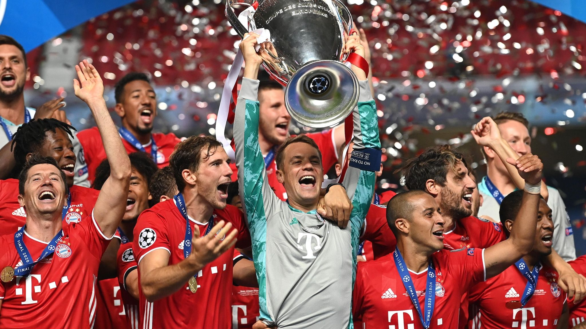
Mia san mia "Nós somos nós"
FC Bayern München foi fundado em 27 de fevereiro de 1900 por um grupo de 11 jogadores liderados por Franz John em um restaurante no centro de munique. Ali iniciava a grande história do gigante da baviera.
O Clube começou a crescer e se estabelecer como uma força dominante no futebol alemão competindo em ligas locais e rapidamente se destacou, conquistando seu primeiro título regional em 1901.
No princípio, o Bayern teve dificuldades financeiras para se manter, e ter um estádio próprio. O primeiro estádio oficial do Bayern foi na Leopoldstraße. O Jogo de estreia foi disputado contra o rival local FC Wacker, onde o Fc Bayern venceu por 8-1.
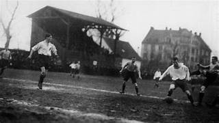
O primeiro título nacional veio em 1932, com o bayern vencendo o eintracht frankfurt por 2x0. Os gols foram de Rohr e Krum, Richard Dombi foi treinador e Kurt Landauero presidente do clube naquela época, a partir daí, o clube passou por altos e baixos, mas sempre manteve sua posição como um dos principais clubes da Alemanha.
Impacto da 2° Guerra mundial
O mundo inteiro parou por conta da guerra, consequentemente o futebol também. Devido à origem judaica do clube, o Bayern foi discriminado e perseguido de inúmeras maneiras desde estrutura até ser obrigado a mudar seu escudo. Foram doze anos sob a ditadura fascista que fizeram com que o clube perdesse a sua posição de destaque nacional que tinha até então.
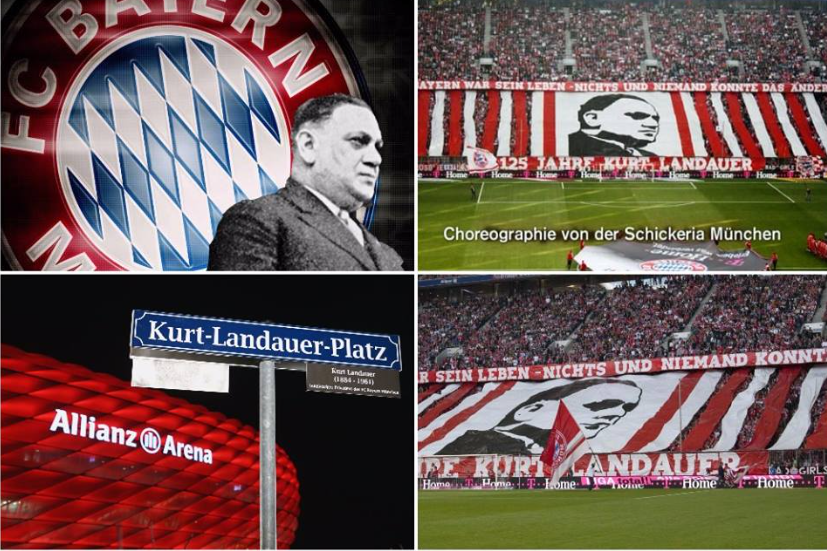
Em julho de 1944, o Bayern teve sua sede do clube bombardeada. Apesar de tudo isso, os jogadores demonstraram grande espírito de equipe.
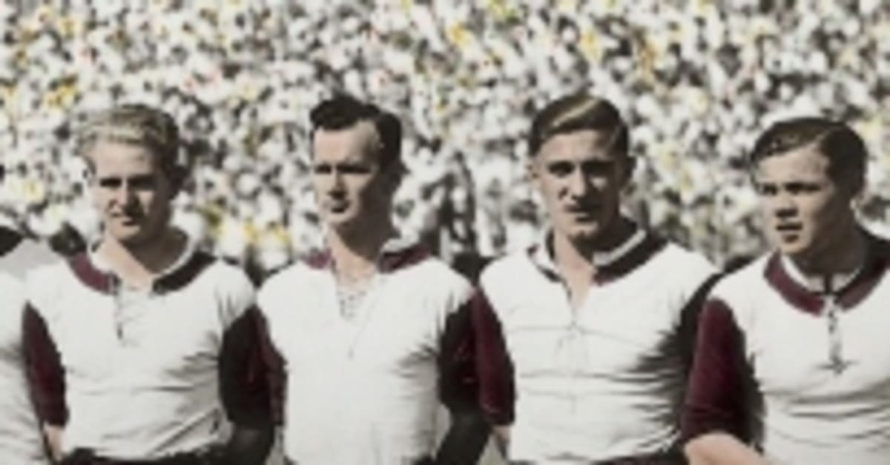
O capitão Conny Heidkamp fez o máximo para manter os jogadores unidos. Ele salvou os troféus que o clube havia conquistado em um carburador de madeira numa sala ao lado do estábulo na fazenda Ascholding onde foi salvo de toda a guerra e retirado anos depois.
A frustração que mudou o rumo do clube
Após anos de guerra, o futebol alemão voltou a sua ascenção, principalmente no final da década de 50 onde o Bayern conseguiu vencer a Copa DFB contra o Fortuna Düsseldorf por um placar de 1x0.
O Bayern enfrentou um duro período de reconstrução, mas conseguiu se reerguer e conquistar seu segundo título nacional em 1969. A partir daí, o clube iniciou uma era de sucesso que o levaria a se tornar um dos maiores clubes do mundo.
Após não ter sido convidado para ser membro fundador da bundesliga, o Bayern teve que diminuir custos, ja que não participaria da principal competição do país.
Dando oportunidade para os jovens das categorias de base do próprio Clube como Franz Beckenbauer, Sepp Maier e o recém chegado Gerd Müller nomes que iriam surpreender o mundo anos depois.
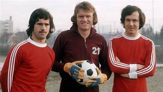
O grande domínio continental do Bayern
Em 1969 o Bayern conquistou a bundesliga pela primeira vez. e na temporada 1971-72 conseguiu vencer novamente de forma dominante, destaque para Gerd Müller que marcou 40 gols. foram feitos mais de 100 gols no campeonato, um time ofensivo que aplicou uma goleada de 11x1 no Borussia Dortmund e impressionou a todos.
1974:

Depois de um Grande ano de vitórias nacionais em 1973, o ano subsequente viria a ficar marcado na história com o início de uma hegemonia do Bayern na copa dos campeões.
Contra o atletico de madrid na final o Bayern venceu por 5-1 no agregado, com dois gols de Uli Hoeneß e Gerd Müller. O Bayern conquistava ali seu primeiro título continental e dava muito orgulho a sua torcida e ganhava reconhecimento internacional
1975:

Na semifinal o Saint-Étienne foi derrotado, Com Roth e Müller marcando os gols na partida de volta em Munique avançando para a final da copa dos campeões.
Na segunda final consecutiva, o adversário foi o Leeds United, com o Bayern vencendo por 2 a 0 em Paris. Com gols de Franz Roth e Gerd Müller, conquistando o bicampeonato europeu consecutivo.
1976:

Havia grandes expectativas para o Clube, já que tinha sido campeão na última edição. Na Semifinal enfrentou o Real Madrid, o primeiro jogo em madrid ficou 1x1 com gol de Gerd müller, na segunda partida em munich, teve o brilho do astro alemão Gerd müller mais uma vez, fazendo 2 gols e avançando na competição.
A final seria contra o St. Etienne em Glasgow, Roth marcou para o bayern (1x0) fazendo com que o clube vencesse 3 vezes consecutiva, uma equipe dominante e consistente na europa.
A nova era do Bayern

A década de 80 ficou marcada pelos seus grandes jogadores e títulos nacionais. O clube teve como seus pilares o meio-campista Paul Breitner, e Karl-Heinz Rummenigge, grande goleador do clube na década.
O Bayern conquistou a Bundesliga em 1980, 1981, 1985, 1986 e 1987, além de vencer a Copa da Alemanha em 1982 e 1984. O clube também teve sucesso na Liga dos Campeões, chegando à final em 1982, mas perdendo para o Aston Villa por 1 a 0.
Lothar Matthäus em anos subsequentes também foi um grande líder para o clube, Em 1986, o FC Bayern ultrapassou o FC Nürnberg e se isolou como o maior campeão nacional alemão.
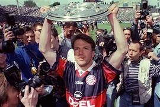
Superação internacional:
A década de 90 foram anos de turbulência, com altos e baixos durante alguns anos. O Bayern perdeu títulos nacionais, copas e na copa dos campeões, mas a torcida permaneceu apoiando incansávelmente. Até que houve uma grande mudança na direção do clube que voltou fazendo boas campanhas.
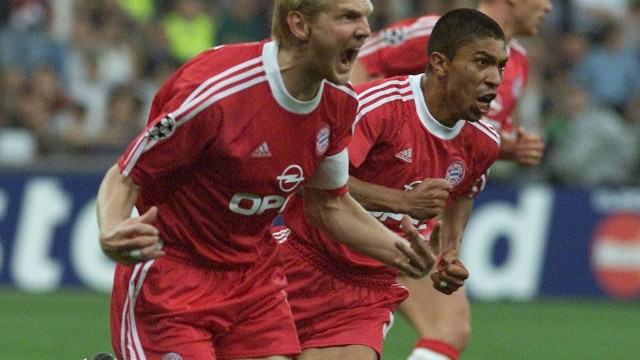
Na temporada 2000/2001 o Bayern liderado por jogadores como Oliver Kahn, o capitão Effenberg e o brasileiro Elber levariam o clube a chegar a mais uma final de Champions league
Final de 2001:
.jpeg)
Onde enfrentaram a equipe do valencia, num grande confronto, com o valencia abrindo o placar ainda no primeiro tempo, o capitão Effenberg empatou o jogo para o bayern, após o término do tempo regulamentar, a final se encaminhou para a disputa de pênalti onde os torcedores do clube de Munique viram a estrela de Oliver Kahn brilhar defendendo a última cobrança ( 5x4 ) para o bayern, e pela 4° vez campeões da Europa.

O Bayern continuou a vencer títulos nacionais, mas a conquista da Champions league de 2001 foi um marco importante para o clube, que se consolidou como uma potência moderna no futebol europeu.
Nova filosofia do Clube:
Os anos 2000 continuaram sendo um período marcante na história do clube, além de títulos da bundesliga e da copa da Alemanha na temporada 2002/2003 o time de Oliver Kahn e Michael Ballack lideraram o clube para a dobradinha. O Bayern seguiu conquistando títulos da bundesliga e copa da alemanha, Os títulos vieram junto com a mudança do bayern para a Allianz arena.
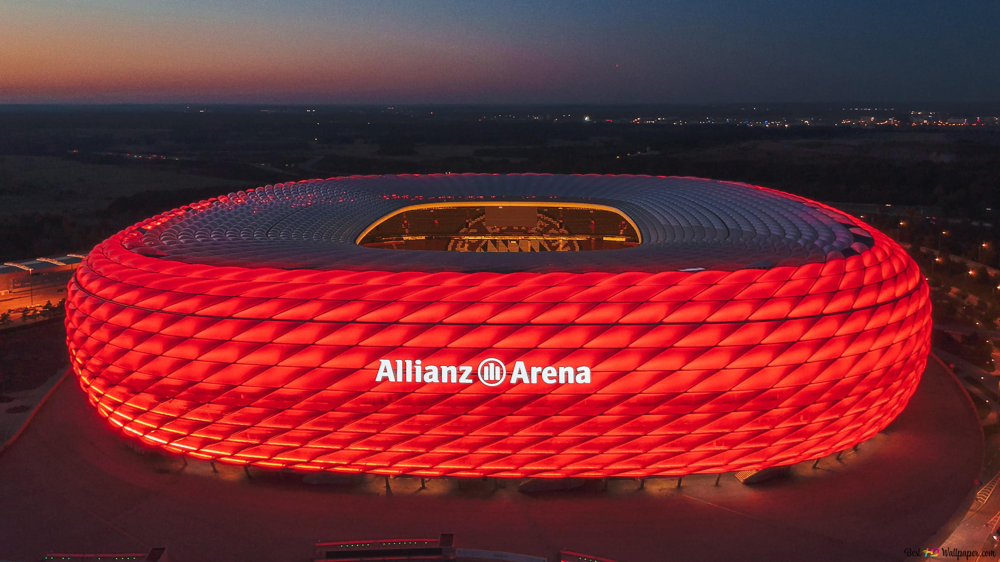
Em maio de 2005 a equipe alemã mudou-se para oque seria a casa de troféus do clube até os dias atuais. Com capacidade para mais de 75 mil torcedores, é um dos estádios mais modernos do e maiores da Europa.
Reformulação:
Para a temporada 2008/2009 o Bayern passou por uma grande reformulação, com a chegada de novos jogadores e a saída de outros, o clube buscava se reestruturar para voltar a ser competitivo tanto nacionalmente quanto internacionalmente.
A reformulação trouxe diversos jogadores que tinham um histórico de sucesso, como Franck Ribéry, Arjen Robben e Mario Gomez, além de promover a ascensão de uma jóia da base, o atacante Thomas Müller.

O FCB finalizou a temporada de 2010 com a dobradinha da liga e da copa. Na final da Liga dos Campeões foi derrotado pela inter de milão em Madrid.
No verão de 2011, Jupp Heynckes assumiu o comando do clube, e a partir disso o Bayern começou a construir uma equipe que se tornaria uma das mais dominantes da história do futebol mundial, com líderes como Manuel Neuer, Bastian Schweinsteiger e Philip Lahm.
Na Champions league o bayern fez uma grande campanha, vencendo o Olympique de Marseille (nas quartas) e Real Madrid (na semifinal). O fcb chegou à final da Liga dos Campeões de 2012, dentro de casa, na Allianz Arena.
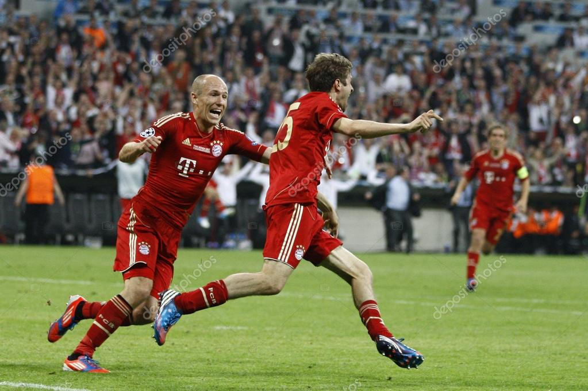
Na finalíssima, Thomas müller abriu o placar para o Bayern com um gol de cabeça porém, não muito tempo depois Didier Drogba empatou o jogo (1x1) e levou a disputa para a prorrogação. Onde o empate se manteve, indo para a disputa por penaltis, o clube de londres venceu o Bayern por 4x3 garatindo seu primeiro título europeu.
Deixando o Bayern com um gosto amargo de derrota, principalmente por ter sido dentro de casa, e por ter tido a chance de conquistar o título mais importante do continente.
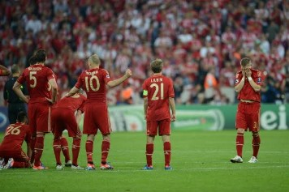
O poderoso Bayern de Munich
Em 2013, o Bayern viria para uma das temporadas mais marcantes da história do futebol. Após perder a champions e o campeonato alemão em 2011/12, a temporada 2012/13 findou-se com o título nacional do Bayern com incríveis 95 (bundesliga), com mais de 20 pontos sobre o Dortmund, conquistando a taça.
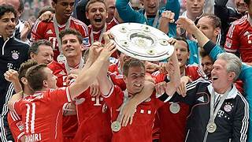
Na copa dfb o Bayern seguiu Enfrentando a equipe do Stuttgart na final, consagrando ainda mais a temporada, além do Bayern atingir marcos históricos, como o sexto troféu da Champions o Clube venceu a tríplice coroa nessa temporada.
Nas semifinais da Liga dos Campeões, o bayern goleou o Barcelona de Pep Guardiola e Lionel Messi por 7x0, e mostrou ao mundo inteiro a sua força.
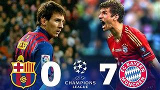
Final da Champions League
A Final foi contra o maior rival da década, o Borussia dortmund de Marco Reus, Robert Lewandowski e Jurgen Klopp. O jogo foi bastante difícil e equilibrado, Mario Mandzukic marcou para o bayern com Gündogan empatando pro dortmund, dando esperaça para o clube de dortmund, mas o Bayern não se abateu
O Bayern de Munique continuou pressionando e, com um gol com a marca registrada do craque Arjen Robben aos 89 minutos, levando toda a torcida a euforia em wembley, dando o quinto título europeu para o clube coroando uma temporada histórica.

2 a 1 contra o Borussia Dortmund. O quinto título europeu marcou o fim de uma sequência infrutífera de 12 anos na Liga dos Campeões e a redenção do ponta direita do bayern .

Conclusão:
Em êxito, essa é a historia do grande clube da Baviera, o Bayern seguiu empilhando títulos e recordes nos anos seguintes, possuindo mais de 83 títulos em toda a sua trajetória, se você curtiu o conteúdo compartilhe com algum amigo, temos artigos relacionados a esse período tão vitorioso do clube, continue navegando por nossos conteúdos, você irá se interessar.
.jpeg)